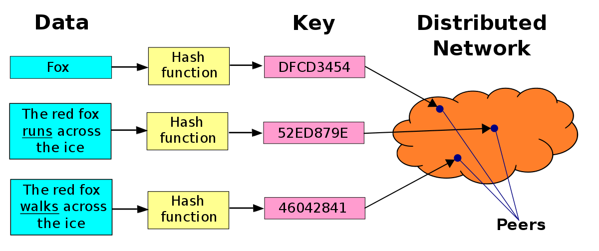
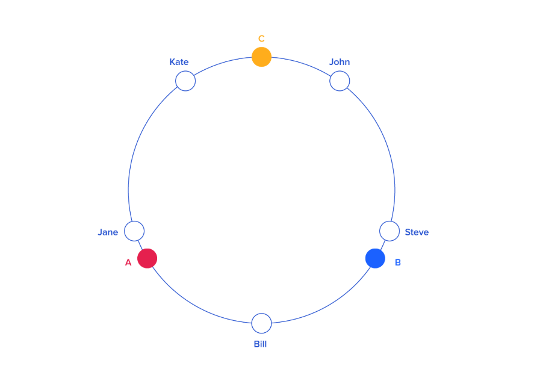
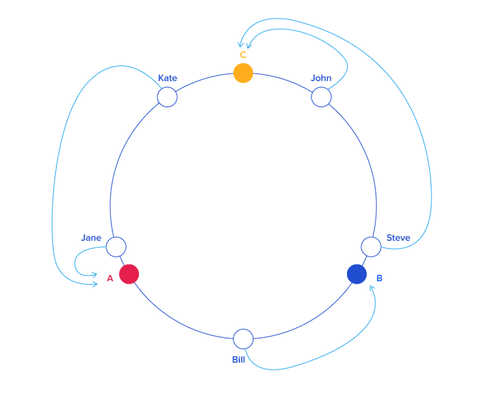

Hashing is the process of mapping data i.e. key to a hash. On a basic level hashing is used to retrieve data quickly mostly in O(1) time. The commercial DB holds lots and lots of data and it will be very inefficient to access that data linearly as an application could be used by thousands of users at a time. So, in this case the hashing used and a hash table is created to hold records and retrieve them with the smallest latency possible. But, The problem with this approach is that a hash table must be stored on a server and as it is stored on a single server it can be a "Single point of failure" and we tried to store it on multiple servers to achieve fault tolerance then the problem of consistency occurs and there is no "Single Point of Truth".
So to tackle this situation the distributed hashing comes into picture.
In the distributed hashing, the hashtable is divided and stored and multiple servers each fragment of hash table may be replicated 2-3 times to achieve greater fault tolerance. So, as there are limited number of records each server holds it can cache it and improve the response time. Only if there is cache miss then the request will be sent to the DB server. How to divide the records among N servers? The simplest strategy used is HASH mod N, So the records are split among N servers and when user request for particular record then it goes through hash function and modulo operation is done to find the server on which record is stored.

Consider the scenario when a server failed or a new server is added and value of N changes. Then we have to rehash all the keys, the cache of all the servers is no longer useful and we have to again store the hash fragments on different servers according to the value of N. This will cause the performance degradation.
Answer to all the above problems is "Consistent Hashing". It is also known as Ring Hashing. As shown in figure the keys are hashed and placed on the ring (We use the angle from 0 to 360 to place) also the servers also hashed according to id or any other parameter and placed on the ring. Now, in consistent hashing according to convention clockwise or anti-clockwise the records are stored in the next immediate server in that direction.


Here distributed hashing is achieved also the drawback of distributed hashing is nullified, How? let's see. If a new server, let's say D, is added it will also be placed on ring right before server C. Now, some of the keys which were previously stored on server C will be stored on the server D and cache of C for only some keys has to be updated. In this way all other nodes remain unaffected. So, the performance degradation will not happen.
Many systems like Memcached, Redis include support for consistent hashing out of the box.